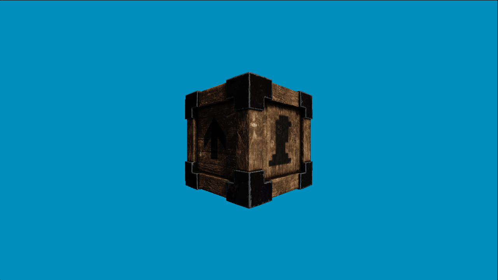

|
Lysa
0.0
Lysa 3D Engine
|
|
Lysa
0.0
Lysa 3D Engine
|
This sample demonstrates the essential patterns of a Lysa Engine application: loading a 3D asset from a .assets pack file, displaying it through the deferred renderer with lights and post-processing, and animating it with a continuous, frame-rate-independent Y-axis rotation.
The tutorial source code is available at https://codeberg.org/LysaEngine/lysa_tutorial_01

Lysa is built on top of the Vireo Rendering Hardware Interface (RHI), which abstracts Vulkan and DirectX 12 behind a single API. Lysa adds the engine layer: asset management, scene representation, a deferred (or forward) rendering pipeline, post-processing, physics integration, and an event bus.
The three foundational objects in every application are:
| Object | Type | Role |
|---|---|---|
| Context | lysa::Context | Singleton that owns every engine subsystem |
| Lysa runtime | lysa::Lysa | Initialises the context and runs the main loop |
| Render target | lysa::RenderTarget | Owns the swapchain and drives per-frame rendering |
lysa::ctx() is a free function that returns a reference to the singleton Context. Every subsystem is reachable through it:
| Member | Type | Purpose |
|---|---|---|
ctx().events | lysa::EventManager | Publish/subscribe event bus |
ctx().fs | lysa::VirtualFS | app:// and user:// virtual filesystems |
ctx().res | lysa::ResourcesRegistry | Registry of GPU resource managers |
ctx().vireo | vireo::Vireo | Raw RHI device and resource factory |
ctx().defer | lysa::DeferredTasksBuffer | Queue a lambda for execution on the next frame |
ctx().asyncTasks | lysa::AsyncTasksPool | Thread pool for background CPU work |
ctx().config | lysa::ContextConfiguration | Read-only copy of the startup configuration |
ctx().samplers | lysa::Samplers | Global sampler registry |
The engine fires three events every iteration:
| Event | Payload | Rate |
|---|---|---|
lysa::MainLoopEvent::PHYSICS_PROCESS | double delta (seconds) | Fixed, default 1/60 s per step (configurable via lysa::ContextConfiguration), fired multiple times per frame if needed |
lysa::MainLoopEvent::PROCESS | double alpha (seconds) | Once per rendered frame, variable |
lysa::MainLoopEvent::QUIT | none | Once, just before resources are destroyed |
PHYSICS_PROCESS uses a fixed timestep so that physics simulations remain deterministic regardless of frame rate. PROCESS receives the remaining fractional time and is where you advance game logic and submit the frame.
| File | Role |
|---|---|
src/Main.cpp | Application class and lysaMain entry point |
src/MainWindow.ixx | Window and renderer configuration |
src/SceneInstance.ixx/.cpp | Scene node hierarchy and asset loading |
src/SceneTree.ixx/.cpp | lysa::Scene wrapper with process callbacks |
src/Camera.ixx/.cpp | First-person fly camera |
src/RotatingAssetScene.ixx/.cpp | Sample-specific scene logic |
 2.1.0
2.1.0